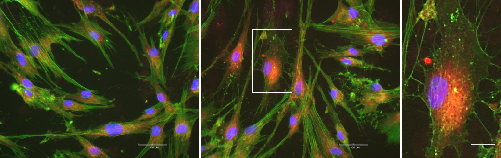
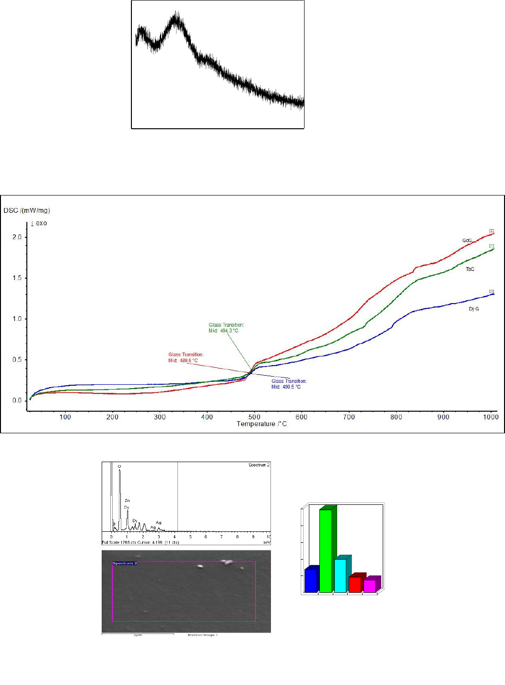
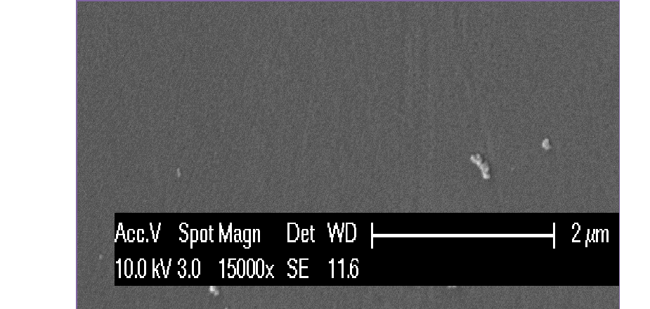
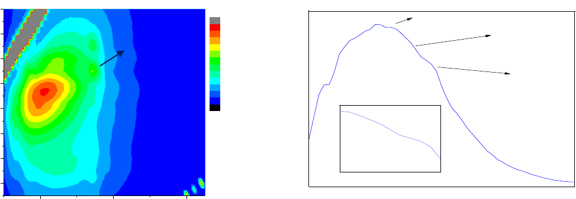
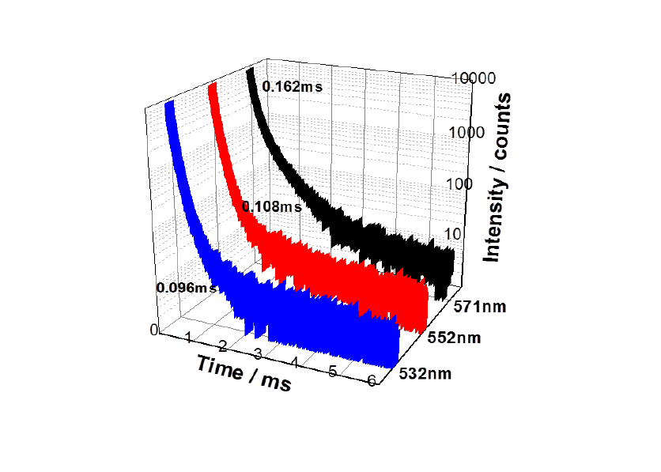
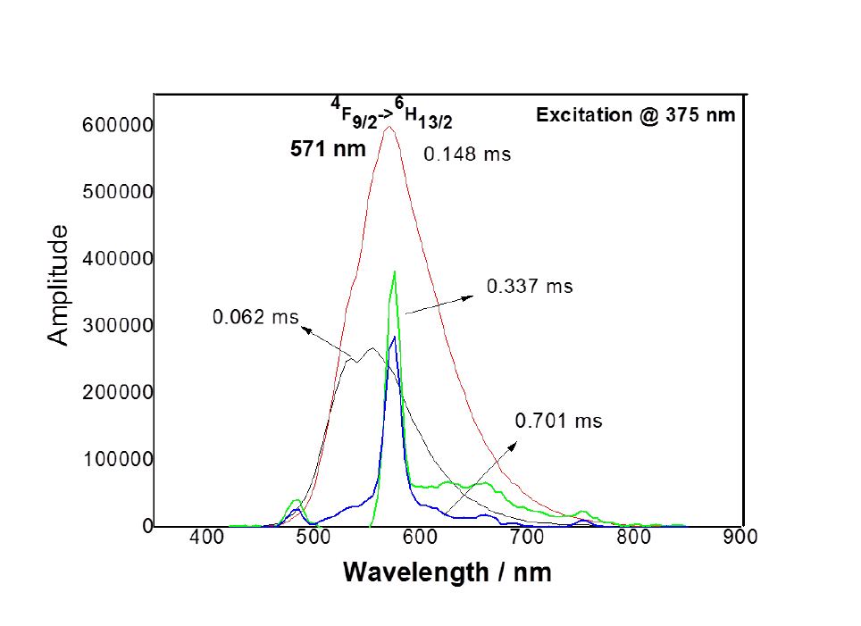
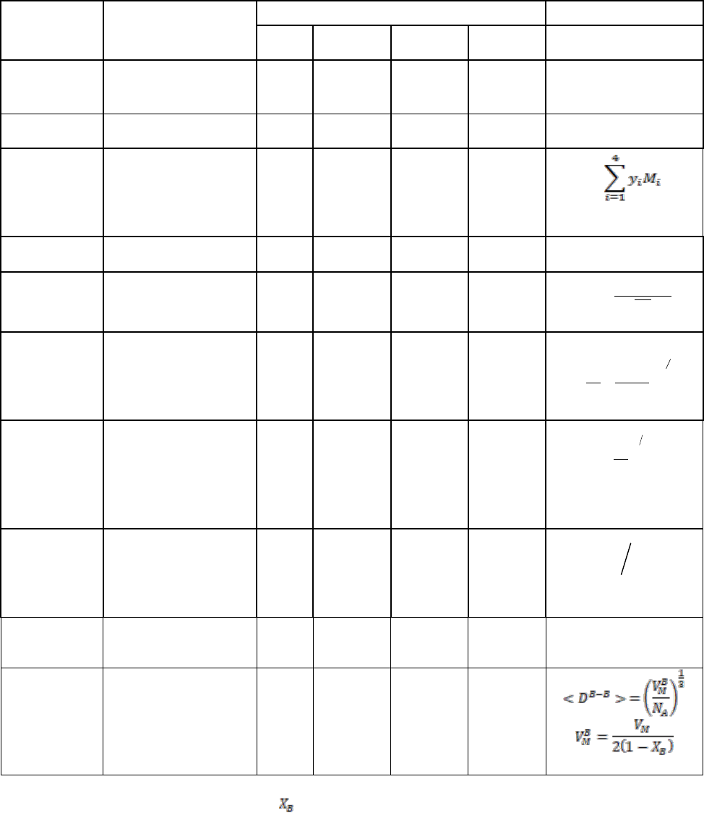

NOVA is a European Union’s Horizon 2020 research and innovation programme under the Marie Skłodowska-Curie in grant agreement No. 753636
Novel Antimicrobial Graphene Oxide-Lanthanide-Hydroxyapatite Composites as Therapeutic Materials in Bone Infection and Repair


NOVA is an innovative multi- and inter-disciplinary Fellowship hosted by the University of Birmingham in the UK with the main aim to develop antimicrobial graphene oxide (GO)-lanthanide glasses (Ln)-hydroxyapatite (HA) composites for bone repair. Large bone defects and infections represent a major challenge for orthopaedic surgeons. Infections may be life threatening or, commonly, associated with long-term disability and pose a serious and increasing threat to public health, especially when antimicrobial resistance is becoming a serious problem. It is therefore highly desirable to develop novel multi-functional systems that can exhibit antimicrobial properties for bone repair. Lanthanide glasses (Ln) and Graphene Oxide (GO) have shown very interesting properties, the first being used in sensing and imaging as well as enabling cell attachment and isomorphic replacements for calcium, the second being an antimicrobial. NOVA will develop a multifunctional composite system combining the useful properties of a lanthanide host glass with the antimicrobial activity of Graphene Oxide and the bioactivity of Hydroxyapatite (HA). The proposed research is a novel research direction, and there is no previously published research on what is proposed to be a new class of multi-functional composites
NOVA will develop a new class of multi-functional composites based on Graphene oxide (GO)-Lanthanide glass (Ln)- Hydroxyapatite (HA) system for antimicrobial and bone repair applications.
WP 1: Development and characterisation of innovative Lanthanide glasses and doped HA
WP 2: Development and characterisation of GO-Ln-HA composites
WP 3: In vitro osteoblastic cell culture, cytotoxicity and antimicrobial studies of GO and GO-Ln-HA composites
A review on the antimicrobial resistance estimated around 0.7M deaths worldwide each year with a possibility to rise to 10M a year by 2050. While resistance among many pathogens is soaring, the pipeline for new drugs is near-empty. In 2017, the World Health Organization reported that only eight antibiotics out of 51 that are currently in development will add value to the current arsenal of antibiotics. The challenge today is to improve and/or develop alternative materials for health care. Our work aims to develop antimicrobial lanthanide containing ceramic composites to address emerging bone and antimicrobial issues as well as diagnostic challenges such as bio-imaging applications taking advantage of the luminescence properties of these materials. In addition, lanthanide (Ln3+) ions can have the ability to modulate bone metabolism. Results support the argument that lanthanide-doped hydroxyapatite composites present enhanced osteoblastic cell response and antibacterial activity - the two key features contributing to an improved biological outcome for the next-generation bone grafts.
The selection of raw material is an important factor in the development of innovative 2D products. It will affect the functionality, physico-chemical and structural properties. In the case of 2D design, a wide range of ceramics has been used and their material characteristics are the critical concern for the best output. The main objective of my work is to develop 21st -century lanthanide 2D products might be smart and advanced multifunctional materials to address emerging bone and antimicrobial issues. The challenge today is to improve alternative technologies for health care. Therefore, my research objective is to develop composite materials with Lanthanide ions for biomedical (bone regenerative and antimicrobial), luminescence applications.
The overall objectives are:
- To produce, characterise and optimise innovative lanthanide host glass structures that will be used to dope hydroxyapatite.
- To optimise processing parameters of GO-Ln-HA composites and study their mechanical and structural properties.
- To determine the biological compatibility, antimicrobial activity and dose and time dependent cytotoxicity of the new composites.
Dr Sooraj Nandyala is a Marie Skłodowska-Curie IF Fellow in NOVA. His scientific background is related to the area of Lanthanide ion doped glasses and hydroxyapatite composites for antimicrobial, bone regenerative, and luminescence applications. He also worked in the Marie Curie Research and Innovation Staff Exchange NEXT 3D project (2015-16) in the same research group. So far, he published 54 peer reviewed journal papers. He has a total of 1288 citations and an hindex of 23. He has contributed 10 book chapters and edited a total of 7 books. He supervised 14 master students and he was the line manager for one research fellow. He will contribute towards optimisation of powders, experimental work and patent creation.
Dr. Artemis Stamboulis is a Co-ordinator in NOVA. She has a strong background in the development and characterisation of biomedical glasses, polymers and ceramics. She is the PI of the Marie Curie NEXT-3D and DOC-3D printing projects. She has been also involved in research collaborations for the development of antimicrobial surfaces and materials. She published more than 65 peer reviewed journal papers, she has in total 3017 citations and an h-index of 25. She has supervised to completion more than 30 Masters students and 25 PhD students as the main supervisor. She has given more than 30 keynote and invited lectures to international conferences and has two patents on antimicrobial surfaces and cell penetrating peptides (license sold to pharmaceutical company). She will advise on the optimisation of the powders in the NOVA. She will secure existing research collaborations, identify industrial stakeholders and contribute to patent creation and commercialisation.
The following career development (CD1-4) activities have been performed since 2017-2019:
CD1: The Fellow have been supervised the following two MSc (T) in Materials Science & Engineering students from May till September 2018.
Student 1: Bibo Zhao ID: 1768886 Project: Development of Lanthanum doped glass reinforced hydroxyapatite composites
Student 2: Chris Miller ID: 1578274 Project: Development of Samarium doped glass reinforced hydroxyapatite composites.
CD2: List of International Conference presentations 2017-2019
Obtained several results have been highlighted in the following international conferences as a keynote lecture (#1); invited talks # 2; Oral presentations # 2; and posters # 2
Keynote Lecture #1
OCT 26-29, 2018 - BIOCERAMICS 30, 30th Symposium and Annual Meetings of the International Society for Ceramics in Medicine Nagoya, JAPAN. Title: Synthesis of bioactive Tellurite-Lanthanide reinforced hydroxyapatite Composites for biomedical and luminescence applications • Acting as Session Chair of Bioceramics 30: Oral Session 6-2: Calcium Phosphate Bioceramics on Saturday 27th October, 16:00 – 17:00.
6
Invited Talks #2
• JAN 8-10, 2018 - ICBHE’18, International Conference on Bioengineering on Health and Environment, Sathyabama Institute of Science and Technology, Chennai, INDIA. Title: Antimicrobial and Luminescence Properties of Lanthanide ions doped Glassy Hydroxyapatite Composite Materials
Acting as a session chair of ICBHE’18 conference.
• JULY 24-28, 2018 - BioMET 2018 – International conference on Bio-Materials, BioEngineering and Bio-Theranostics, VIT University, Vellore, INDIA. Title: Biological and Luminescence response of Tellurite-lanthanide-reinforced hydroxyapatite Composites
Oral Presentations #2 • JULY 9-13, 2018 PNCS-ESG 2018 - 15th International Conference on the Physics of NonCrystalline Solids & 14th European society of Glass Conference, Saint Malo, FRANCE. Title: Development of Lanthanides-reinforced Hydroxyapatite composites: MG63 Cells behaviour and Antimicrobial response.
2017 Oral Presentations • OCT 25-27, 2017 - BIOCERAMICS 29, 29th Symposium and Annual Meetings of the International Society for Ceramics in Medicine Toulouse, FRANCE. Title: Development of La3+doped zinc borate glass fibres for biomedical applications
Poster Presentations #2 • APRIL 24-26, 2017 - FLUOR0 FEST Workshop - Glasgow, SCOTLAND, UK Title: Decay measurements of emission and up conversion transitions: Dy3+ doped silver zinc borate glasses
• OCT 25-27, 2017- BIOCERAMICS 29, - 29th Symposium and Annual Meetings of the International Society for Ceramics in Medicine Toulouse, FRANCE. Title: Time-resolved and Fluorescence Excitation–Emission Matrix Measurements of Gd3+ and Tb3+ doped Silver Zinc Borate Glasses for Biomedical Applications.
CD3: The following book chapters have been published based on NOVA results: • Sooraj Nandyala, et.al, “Development of Bioactive-Based Tellurite-Lanthanide Ions– Reinforced Hydroxyapatite Composites for Biomedical and Luminescence Applications”, in “Tellurite Glass Smart Materials: Applications in Optics and Beyond” Eds. R. El-Mallawany, Springer International Publishing AG, part of Springer Nature, USA. Chapter 12, (2018), pp.275-288. ISBN: 978-3-319-76567-9. (Book Chapter)
CD4: Collaborative publications in the duration of the NOVA:
Book chapters:
B. Chandra Babu, et.al “Optical and Electrical Properties of Transition Metal Ion doped Sol-Gel Materials“ in “Advanced Materials and their Applications: Micro to nano scale”, Eds: Ishaq Ahmad, Paolo Di Sia, Rizwan Raza, Chapter 9, (2018), pp 195-218, (eBook): 978-1-910086-216,Publisher: One Central Press (OCP), Manchester, UK. (Book Chapter)
G. Bhaskar Kumar, et.al “Luminescence and Energy Transfer Phenomena in Lanthanide ions doped Phosphor and Glassy Materials” in “Current Trends on Lanthanide Glasses and Materials” Eds. N. Sooraj Nandyala, Chapter 7 (2017),pp 159-190, Materials Research Forum LLC, USA. (Book Chapter)
7
Peer -reviewed research articles: • H. Kabir, Sooraj H Nandyala et.al, Polyethylene glycol assisted facile sol-gel synthesis of lanthanum oxide nanoparticles: Structural characterizations and photoluminescence studies, Ceramics International, In press, 2018. (Impact factor 3.057) • • V. Singh, M. Sehshardi, M. Radha, N. Singh and Sooraj H Nandyala, Intense infrared, visible up and down emissions in Er3+/Yb3+ co-doped SrAl12O19 obtained by urea assisted combustion route, Journal of Materials Science: Materials in Electronics, October 2018, Volume 29, Issue 19, pp 16516–16522. (Impact factor 2.324)
• Fei Wang, et.al.” Effect of cation field strength on the structure of alkaline earth fluoroalumino-phosphosilicate glasses”, Journal of the American Ceramic Society, 2018. (Submitted) (Impact factor 2.841)
The REF rating and the quality of my research work has been impacted and recognised by:
(i) The organising committee of Bioceramics 30, Japan, have been invited for a Keynote Lecturer and Session chair on Oct 26-29, 2018, Nagoya, Japan.
(ii) the Springer International Publishing AG, part of Springer Nature, USA, invited me to write a book Chapter on bone materials in “Tellurite Glass Smart Materials: Applications in Optics and Beyond”.
(iii) Optics and Laser 2019, organising committee inviting to deliver a keynote lecture in the International Summit on Optics, Photonics and Laser Technologies (Optics & Laser-2019) scheduled during June 3-5, 2019 in San Francisco, CA, USA.
(iv) Also, the organising committee of Materials Science & Smart Materials (MSSM-2019), UK, inviting me to deliver a keynote lecturer on Smart Lanthanide Composites Materials for Biomedical and Luminescence Applications, that will be held on 24-26 July 2019 in Aston University, Birmingham, UK.
Under Work Package (WP 1): Development and characterization of innovative lanthanide glasses and doped HA
In this work package, the following tasks (Tasks 1.1-1.5) have been discussed in detail. Task 1.1 Preparation of Lanthanide glasses; Task 1.2 Bioactivity and dissolution studies; Task 1.3 Structural characterisation of Ln3+ glasses; Task 1.4 Hydroxyapatite doping and characterization; and Task 1.5 Photoluminescence studies of Lanthanide (Ln3+) glasses and doped HA. Under this tasks, Dr. Nandyala has been prepared and developed the following host glasses doped with different Lanthanides ions (0.5;1;2 and 4mol%).
• Silver-zinc borate host glasses doped with Gadolinium, Terbium and Dysprosium oxides • Boro silicate host glasses doped with Europium oxide • Boro silicate host glasses doped with Thulium oxide • Boro tellurite silicate host glasses doped with Lanthanum and Samarium oxides • Boro zinc silicate host glasses with Lanthanum and Samarium oxides
Silver- Zinc Borate Host Glasses: Silver zinc borate glasses doped with Gadolinium, Terbium and Dysprosium oxides with a molar composition of {(6.4Ag2O-24ZnO-8Li2O-60B2O3) – 1.6(Ln2O3)} where Ln = Gd3+ Tb3+ & Dy3+ were prepared by a melt quenching (in air) route at 1000°C, using a porcelain crucible for an hour. The glasses produced were highly transparent with a good optical quality. The samples are abbreviated as GdG, TbG and DyG. Gas pycnometry is recognized as one of the most reliable techniques for obtaining absolute density measurements. Inert gas, such as helium is used as the displacement medium. Density calculations using the gas displacement method are much more accurate and reproducible than the traditional Archimedes water displacement method. The AccuPyc II 1340 Series Pycnometer was used to measure the densities of GdG, TbG and DyG glasses. The structural and physiochemical characteristics of GdG, TbG and DyG were studied by X-ray diffraction (XRD). This was performed using a Siemens D 5000 diffractometer with Cu-Kα radiation (λ= 1.5418Å). A DSC-404C NETZSCH was used for the thermal analysis of glasses. A scanning electron microscope (SEM) (Philips XL30 FEG ESEM) equipped with an energy dispersive analyser (EDS) (Oxford INCA) was used to evaluate the microstructure of the GdG , TbG and DyG glasses. Time-resolved measurements were performed using a HORIBA Scientific DeltaFlex equipped with a SpectraLED excitation source at 267 nm for GdG and 371 nm for the TbG glasses. Time-resolved emission spectra (TRES) were made by recording the time-resolved decay at equal wavelength steps for a fixed time period. Decay analysis of the TRES data to produce decay associated spectra (DAS) was performed using EzTime software by globally fitting the dataset. Steady state excitation-emission matrix (EEM) measurements were performed using a HORIBA Scientific FluoroLog 3 fluorimeter. These measurements involve scanning the emission for different excitation wavelengths (5 nm increments) and produce a ‘contour map’ of intensity for this excitation – emission matrix. An amorphous nature was observed using X-ray diffraction (XRD) analysis and specimen data from the GdG sample is given in Figure 1. A DSC thermogram Figure 2 (a-c) showed the glass transition temperature (Tg) of GdG glass composition was calculated to be 489.5oC, whereas the Tg of TbG glass was at 494.5oC and similarly DyG glass was at 490.5oC. It seems that the glass transition temperature is in the same range. EDS analysis confirmed the presence of silver, zinc, dysprosium, gadolinium and terbium in the GdG, TbG and DyG samples. A specimen DyG glass sample as shown in Figure 3. The surface morphology of the DyG glass at magnification of 15000X was given in the SEM micrograph shown in Figure 4. The glass sample appeared as a homogeneous morphology.
The emission spectra (Figure 7a) of DyG glass showed various emission bands when excited at 375nm, which are attributed to the transitions within the 4f shells of Dy3+ ion as 532 nm (6P7/2 →6F9/2), 552 nm (4F7/2 →6H9/2) and 571 nm (4F9/2 →6H13/2). The intensity of the most important emission band corresponding to the yellow colour centred at 571nm depended strongly on the concentration of the lanthanide ion and glass matrix environment. The sites and the environment experienced by the Dy3+ ions were not homogeneous in the glass resulting in an inhomogeneous broadening of the spectral features. Similarly, there was a lack of symmetry and homogeneous distribution of the luminescent centers will also have an impact on the time resolved decay kinetics. Figure 7b shows the lifetimes of the recorded three emission transitions of the DyG glass composition. The time-resolved decays from these emission bands; 532 nm (6P7/2 →6F9/2), 552 nm (4F7/2 →6H9/2), 571 nm (4F9/2 →6H13/2) gave average lifetimes of 0.096 ms, 0.108 ms and 0.162ms respectively. Among them, the transition (4F9/2 →6H13/2) has a long lifetime whereas the transition (4F7/2 →6H9/2) has a short lifetime about 0.096 ms. Furthermore, the dependence of the lifetimes on the intensity of emission transitions was observed in the DyG glass. A further insight can be obtained by measuring the time-resolved decay over a wavelength range at fixed wavelength increments for the same time period. This can give both decay and intensity information and can also be applied to structural studies. This technique is very sensitive to the kind of active ion, its local site and distribution within the host matrix. The determined luminescence decay associated spectra (DAS) of the DyG glass with excitation 375nm are shown in Figure 8. The DAS showed a bright yellow emission transition (4F7/2 →6H9/2), 571 nm which was consisted of different species, with different decay times at 0.062 ms, 0.148 ms, 0.337 ms and 0.701 ms. The yellow colour peak (4F7/2 →6H9/2) was very sharp at 0.337 ms and 0.701 ms, respectively. Also, it was noticed that, the trends of the peak were fully dependent on the decay times. The decay time of 0.062 ms showed a double peak with broadening and the decay time was gradually increased resulting in a very sharp yellow peak at 0.701 ms meaning that the distribution of luminescent centres had good impact on the decay times. Therefore, an “ideal” lifetime of the DyG glass was observed as 0.701ms. Since the lifetimes of the DyG glass were in milliseconds, such glass could be labelled as yellow phosphorescent optical glass. This work shows that TbG and DyG glasses may useful in the green and yellow phosphorescent applications respectively. Further, optimization of the GdG glass is a good candidate for UV laser performance.
Figure 3: Elemental analysis of DyG glass composition showing the presence of dysprosium, silver and zinc ions; (a) EDS spectrum at corresponding selected area; (b) Elemental composition of DyG glass composition in weight %.

Figure 4: A smooth surface morphology of DyG glass composition was observed by scanning electron microscopy at a magnification of 15000X.
Figure 5 shows contour plots of excitation wavelength (y-axis) against emission wavelength (x-axis). Red in the colour scale represents higher intensity and blue/black lower intensity. The upper diagonal line from the lower left to the upper right of the image, as seen in Figure 5a and b relates to Rayleigh scattering (i.e. emission wavelength equals excitation wavelength). There is another scattering feature present in the EEMs and this most likely pertains to Raman scattering. Although not covered in the EEM measurement complementary information, exciting further into the UV was obtained using the time-resolved measurements and the determination of decay associated spectra. Here, the UV band 310nm is clearly observed in the DAS in Figure 5c of GdG glass. The time-resolved determined decay associated spectra for GdG glass showed the presence of three lifetime components with lifetimes of 5.92, 20.3 and 53.1 µs. In the spectrum of the 53.1µs component the UVA peak at ~ 310nm from the 6P7/2 →8S7/2 transition was clearly observed. However, in the spectrum associated with a lifetime of 20.3 µs, the peak wavelength was shifted towards 364-386nm. Similarly, the spectrum associated with a lifetime of 5.92 µs exhibits a broad peak at around 360nm. As Gd3+ is only expected to emit radiation in the UV region the origin of the other peaks most likely relate to the host, as may the main emission in the EEMs, and requires further study. Of interest in Figure 6c is the lifetime related to 6P7/2 →8S7/2 transition. Therefore, the “ideal or expected” lifetime for this GdG glass is around 53.1 µs, with which to monitor UVA radiation from the DAS profile. This also shows the power of using DAS to distinguish between emitting species.
For TbG glass, the EEM indicates that excitation close to 415nm provides the peak emission, in a similar fashion to that seen in the GdG sample. Again, this behaviour is tempting to ascribe to the host. However, exciting at shorter wavelengths or closer to 480nm produces emissions in the range of 489 nm, 545nm, 585nm and 620nm as observed in the Figure 5b. These transitions are assigned in the Figure 5d as follows; 5D4→7F6 (489nm), 5D4→7F5 (545nm), 5D4→7F4 (585 nm), 5D4→7F3 (620 nm) respectively. Of these peaks, the 545nm transition has been more prominent one with bright intensity compared to other peaks. Figure 6d gives the DAS and a featureless spectrum with an associated decay time of 189 µs can be seen. This may emanate from the host and the advantage of using DAS can clearly be seen as the more typical spectral emission of Tb3+ is evident in the DAS with lifetimes of 1.3ms and 3.29ms. Thus, information concerning the transition energy and its decay kinetic can be obtained. Since the lifetime of the TbG is in milliseconds, such glasses could be labelled as green phosphorescent optical glasses.
The steady state excitation–emission matrix (EEM) measurements of DYG are shown in Figure 6a. The EEM indicates an emission at 571 nm for the DyG glass. Also, it is clear that there
11
are other two underlying transitions in the range of 500-560 nm. The emission spectra were also taken directly from EEM profile as shown in Figure 9b, where the three transitions 532 nm, 552 nm and 571 nm could be observed, however the bands were overlapping in the spectra. This approach can give a reasonable idea of which wavelengths to use in the time-resolved experiments (especially DAS), which can enable a more in-depth investigation of the bands to be performed.
Figure 5: (a,b) A contour map of excitation–emission matrix (EEM) of GdG and TbG; (c, d) Decay associated luminescence spectra (DAS) spectra of GdG, TbG glasses at excitation 267 nm and 371 nm
Figure 6: (a) A contour map of excitation–emission matrix (EEM) and (b) Emission spectra collected by EEM data at excitation 375nm of DyG glass composition.
The emission spectra (Figure 7a) of DyG glass showed various emission bands when excited at 375nm, which are attributed to the transitions within the 4f shells of Dy3+ ion as 532 nm (6P7/2 →6F9/2), 552 nm (4F7/2 →6H9/2) and 571 nm (4F9/2 →6H13/2). The intensity of the most important emission band corresponding to the yellow colour centred at 571nm depended strongly on the concentration of the lanthanide ion and glass matrix environment. The sites and the environment experienced by the Dy3+ ions were not homogeneous in the glass resulting in an inhomogeneous broadening of the spectral features. Similarly, there was a lack of symmetry and homogeneous distribution of the luminescent centers will also have an impact on the time resolved decay kinetics. Figure 7b shows the lifetimes of the recorded three emission transitions of the DyG glass composition. The time-resolved decays from these emission bands; 532 nm (6P7/2 →6F9/2), 552 nm (4F7/2 →6H9/2), 571 nm (4F9/2 →6H13/2) gave average lifetimes of 0.096 ms, 0.108 ms and 0.162ms respectively. Among them, the transition (4F9/2 →6H13/2) has a long lifetime whereas the transition (4F7/2 →6H9/2) has a short lifetime about 0.096 ms. Furthermore, the dependence of the lifetimes on the intensity of emission transitions was observed in the DyG glass. A further insight can be obtained by measuring the time-resolved decay over a wavelength range at fixed wavelength increments for the same time period. This can give both decay and intensity information and can also be applied to structural studies. This technique is very sensitive to the kind of active ion, its local site and distribution within the host matrix. The determined luminescence decay associated spectra (DAS) of the DyG glass with excitation 375nm are shown in Figure 8. The DAS showed a bright yellow emission transition (4F7/2 →6H9/2), 571 nm which was consisted of different species, with different decay times at 0.062 ms, 0.148 ms, 0.337 ms and 0.701 ms. The yellow colour peak (4F7/2 →6H9/2) was very sharp at 0.337 ms and 0.701 ms, respectively. Also, it was noticed that, the trends of the peak were fully dependent on the decay times. The decay time of 0.062 ms showed a double peak with broadening and the decay time was gradually increased resulting in a very sharp yellow peak at 0.701 ms meaning that the distribution of luminescent centres had good impact on the decay times. Therefore, an “ideal” lifetime of the DyG glass was observed as 0.701ms. Since the lifetimes of the DyG glass were in milliseconds, such glass could be labelled as yellow phosphorescent optical glass. This work shows that TbG and DyG glasses may useful in the green and yellow phosphorescent applications respectively. Further, optimization of the GdG glass is a good candidate for UV laser performance.

Figure 7: (a) Recorded steady state emission spectrum at excitation 375nm, and (b) Decay profiles of emission transitions of DyG glass composition
Figure 8: Decay associated luminescence spectra (DAS) spectra of DyG glass at excitation 375 nm showing the sharp yellow emission transition 4F7/2→6H13/2 (571nm) at different decay times
Boro silicate Host Glasses doped with Europium oxide: Under this category the Boro silicate host glasses were prepared from powdered chemical high purity chemicals in mol fraction and (in mol%) with the following chemical formulae as given below. The chemicals Boron oxide (B2O3) as boric acid (H3BO3) (99.5% purity, Aldrich), silica (SiO2) (Riedel-de Haen), sodium oxide (Na2O) as sodium carbonate (Na2CO3) (>99%, Aldrich), calcium oxide (CaO) as calcium carbonate (CaCO3) (>99%, Aldrich), zinc oxide (ZnO) (>99%, Aldrich), tellurium oxide (TeO2) (>99%, Aldrich) and Europium oxide (Eu2O3) (>99.9%, Aldrich) were used. These powders were weighted according to the chemical compositions to form 80 g batches. Then the powders were mixed together homogeneously in porcelain crucibles. And then the mixed powders were melted under controlled conditions at 1000 ℃ for 1h with a heating rate of 8℃ min-1 in a muffle furnace. The melt was rapidly quenched (air) in pouring onto a stainless-steel plate at room temperature.
Table 1: Physical properties of Eu3+ doped Nova host glasses

Where NA= Avogadro ’s number; yi = molar fraction of each compound; M% NEu= mole percent of Europium; Z= atomic mass of Europium. is molar percentage of Boron
Dr. Sooraj Nandyala, School of Metallurgy and Materials, University of Birmingham, Elms Road, Edgbaston, B15 2SE , Birmingham, United kingdom. Emails: s.h.nandyala@nham.ac.uk and nandyala.sooraj@gmail.com